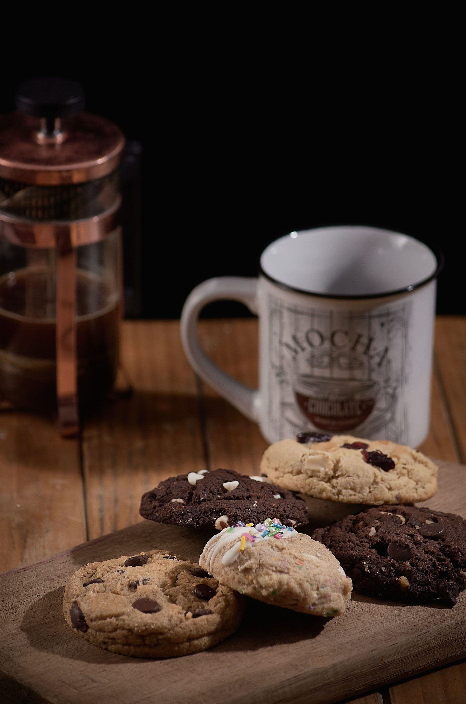

Get Baked by Christina
A Tyler cottage-law home bakery making custom decorated cookies, macarons, cupcakes and cakes to order.
About
Get Baked by Christina is a cottage-law home bakery in Tyler taking custom orders for pickup. The menu covers custom decorated cookies, cookie cakes, macarons, cupcakes, cake pops and cakesicles, polvorones, banana pudding cookies, sugar cookies and vintage heart cakes. Treats also appear at The Loft Downtown Mall and The Headless Librarian, and the bakery takes takeout, delivery and pop-up orders.
Services
Custom decorated cookies
Custom decorated cookies with a one-dozen minimum.
Cookie cakes
Eight-inch round cookie cakes.
Macarons
Macarons in Salted Caramel and Vanilla, with a two-dozen minimum.
Cupcakes
Cake pops and cakesicles
Polvorones
Gallery


All gallery photos are stock photos, labeled as such. They show the kind of work and setting described on this page, not this business.
Visit
Contact
Get Baked by Christina serves Tyler, TX. Questions? Call +1 903-630-4226.